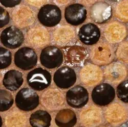
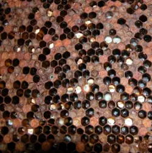
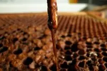

Bacterial brood disease
American Foulbrood (AFB) in the UK
Last updated: 15 August 2026

American foulbrood (AFB) is one of the most serious brood diseases affecting honey bees in the UK. It is a highly infectious bacterial disease caused by Paenibacillus larvae and is classified as a notifiable disease, meaning suspected cases must be reported through the proper channels.
AFB affects developing brood after the cells have been capped. Infected larvae die inside the sealed cell, break down into a sticky brown mass and eventually dry into hard infectious scales that can remain dangerous for many years. Because the spores survive for such a long time, outbreaks can spread through contaminated equipment, honey, robbing behaviour and beekeeper handling.
This guide explains possible signs associated with AFB, how the ropiness test is commonly used, how the disease can spread, and when UK beekeepers should contact a bee inspector for official advice.
Key signs of American foulbrood
American foulbrood may show first as an uneven or “pepper-potted” brood pattern, with healthy sealed brood mixed among empty cells and diseased brood. The sealed cappings may look darker than normal, slightly sunken, greasy or perforated with small holes.
As the disease progresses, infected larvae break down inside the sealed cells and turn brown. When tested carefully with a matchstick, the remains may stretch into a sticky thread, which is known as the ropiness test.
Some colonies may also have a foul, unpleasant or sulphurous smell, but smell should never be relied on by itself. Some cases may show little or no obvious odour, so the brood pattern, cappings and larval condition are more useful signs to record and report.
What does American foulbrood look like?

American foulbrood is commonly associated with sealed brood rather than open larvae. The brood area may look uneven, patchy or “pepper-potted”, with normal capped cells mixed among empty cells, dead brood and suspicious-looking cappings. This uneven appearance is one of the main reasons a beekeeper may first suspect that something is wrong.
The cappings over affected cells can appear darker than the surrounding brood, slightly sunken, greasy or damp-looking. Some may have small holes where adult bees have tried to uncap and remove dead brood. These perforated cappings are a serious warning sign, especially when they appear with dead sealed brood and a patchy brood pattern.
Inside the cell, the infected larva breaks down into a brown, sticky mass. As the remains dry, they form a hard scale lying along the lower wall of the cell. These scales are difficult for bees to remove and can remain infectious for a very long time, which is why suspect comb and equipment must not be moved between colonies.
AFB can sometimes produce an unpleasant smell, but smell should never be used as the only guide. Some confirmed cases have little obvious odour. More concerning signs include sunken or perforated cappings, brown larval remains, hard scales in old cells and an uneven brood pattern affecting sealed brood.
The ropiness test

The ropiness test is a field check used when a sealed brood cell contains suspicious brown larval remains. A clean matchstick, small twig or similar disposable probe is gently inserted into the affected cell and then slowly withdrawn.
If the remains stretch out in a brown, sticky thread, often several centimetres long, this can be a strong warning sign of American foulbrood. The material may look glue-like or mucus-like and can cling to the probe as it is pulled away.
A positive ropiness test does not replace official diagnosis or inspection, but it should be treated seriously. If you see ropy brown remains, close the hive, avoid moving any bees or equipment, and contact a bee inspector for advice.
Do not keep testing multiple cells unnecessarily, and do not move frames between colonies afterwards. If AFB is suspected, the priority is to reduce the risk of spreading spores until the colony has been assessed properly.
What to do if you suspect AFB
If you suspect American foulbrood, stop the inspection as soon as it is safe to do so and avoid moving frames, supers, bees or equipment to any other colony. Close the hive carefully and keep the colony contained until you have received official advice.
Do not try to treat the colony yourself, shake bees onto new equipment or swap brood frames into another hive. These actions can spread infectious spores and make the outbreak harder to control.
Contact a bee inspector or the National Bee Unit immediately and follow official advice. AFB is a notifiable disease, so suspected cases should be dealt with through the proper inspection process rather than managed privately.
Read more: When to call a bee inspector.
What causes American foulbrood?
AFB is caused by the bacterium Paenibacillus larvae. The spores can survive for decades and spread through contaminated equipment, robbing, drifting bees, or beekeeper handling.
What not to do
Do not swap frames, combs, bees or supers between colonies if American foulbrood is suspected. Moving equipment is one of the easiest ways to spread infectious spores to healthy hives.
Do not sell, lend, reuse or move suspect equipment until the situation has been assessed. Hive tools, gloves, boxes and frames may all carry contamination if they have been in contact with infected material.
Do not delay reporting because you are unsure. It is better to ask for official advice early than to wait until a suspected problem may have spread further through the apiary.
American Foulbrood FAQ
Yes. AFB must be reported to the National Bee Unit if suspected.
In many confirmed cases, affected colonies may need to be destroyed under official guidance. Follow the advice of the bee inspector or National Bee Unit.
AFB is commonly associated with sealed brood and ropy larval remains, whereas European foulbrood more often affects unsealed larvae and is not usually ropy. Official confirmation should be sought where foulbrood is suspected.
Image credits
Disease reference images on this page are courtesy of The Animal and Plant Health Agency (APHA), Crown Copyright.